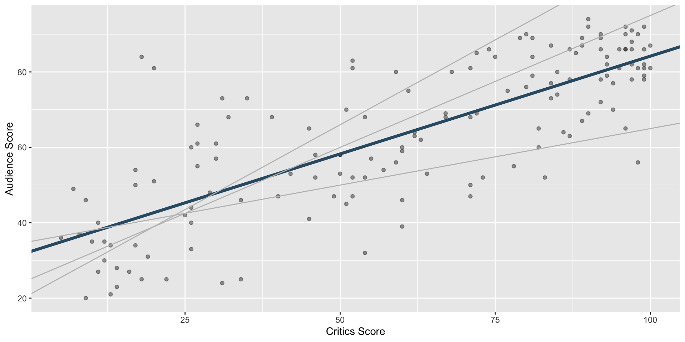

Use simple linear regression to model the relationship between a quantitative outcome (\(Y\)) and a single quantitative predictor (\(X\)): \[\Large{Y = \beta_0 + \beta_1 X + \epsilon}\]
\(\beta_1\): True slope of the relationship between \(X\) and \(Y\)
\(\beta_0\): True intercept of the relationship between \(X\) and \(Y\)
\(\epsilon\): Error (residual)
Simple linear regression
\[\Large{\hat{Y} = b_0 + b_1 X}\]
\(b_1\): Estimated slope of the relationship between \(X\) and \(Y\)
\(b_0\): Estimated intercept of the relationship between \(X\) and \(Y\)
No error term!
Choosing values for \(b_1\) and \(b_0\)

Residuals
\[\text{residual} = \text{observed} - \text{predicted} = y - \hat{y}\]
The least squares line is the one that minimizes the sum of squared residuals
Least squares line
Slope and intercept
Properties of least squares regression
The regression line goes through the center of mass point (the coordinates corresponding to average \(X\) and average \(Y\)): \(b_0 = \bar{Y} - b_1~\bar{X}\)
Slope has the same sign as the correlation coefficient: \(b_1 = r \frac{s_Y}{s_X}\)
Sum of the residuals is zero: \(\sum_{i = 1}^n \epsilon_i = 0\)